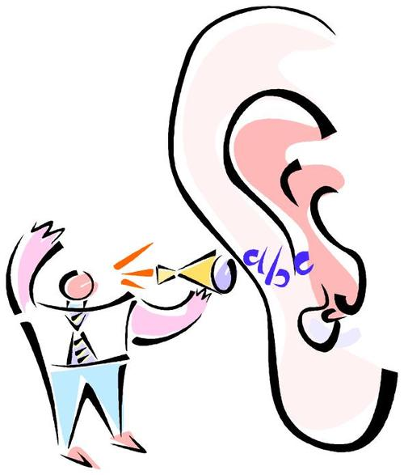

With brand advocacy gaining prominence as a priority for CMOs, more and more marketers are being tasked with getting a brand advocate program up and running for their company or division. However as a new concept, it's not that easy to just 'set it up.' The truth is that there aren't that many blueprints or public examples of successful programs that a marketer can just copy.
The other issue is that there are a number of different way to run brand advocate programs. Are you trying to promote content or are you trying to drive leads? Brand advocates are very powerful in that they represent a trusted voice about your brand online and they have considerable influence on their online connections or people who can see them publicly speaking about a company in search results.
What I wanted to write about though is that regardless of the purpose of your brand advocate program or the results you're trying to achieve, there are a number of misconceptions that need to be addressed so you can best organize your efforts.

#1 Not all companies have brand advocates
No matter the size, industry, product or service - all companies have brand advocates. A brand advocate is simply someone who is willing and able to advocate and promote your brand online. Every company has a mix of suppliers, customers, fans, and employees who, as long as they’re happy, are willing to endorse you online. One-person shop who hasn't landed the first customer? You still have family and friends don't you?
When designing your brand advocate program, make a list of the people who would be willing to help promote you and your content based on the types listed above. It will also help inform the types of programs you can run and how it can be best structured.
#2 We don't need a brand advocate program
Do you need better marketing? If you're profitable and you're product or service is flying off the shelf without any then sure you can move on to the next point. But the reality is that no company would not benefit from better and more effective online exposure.
What a brand advocate program really boils down to is having 3rd parties talk about you online, (hopefully) in a positive manner. Whether it's sharing your discount coupons, helping you write reviews, or sharing your digital content with their networks, your online presence stands to benefit enormously and usually with a massive ROI considering how much exposure you can drive without buying media.
#3 Brand advocates don’t fit with our marketing strategy
Every digital marketing strategy has similar goals - drive traffic, drive leads, increase awareness and increase engagement. I haven't run into too many that deviate too far from the playbook. Brand advocates dovetail with just about any marketing strategy because it’s really just an extension of your distribution strategy. Content marketing? Have brand advocates help distribute your content. Drive leads? Have brand advocates drive traffic to your lead capture forms. Need more social media engagement? Send your digital content to brand advocates so it’s easy for them to like on Facebook or retweet on Twitter.
The point is that marketing boils down to content (ads, content, creative, contests, etc.) and distribution (media buying, social media outreach, PR, etc.) Brand advocates are an effective low cost solution that greatly increases distribution without putting you over budget.
@ Copyright 2013 Elevate Inc. All Rights Reserved